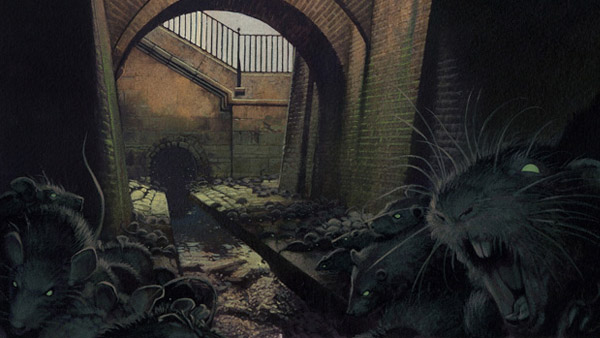
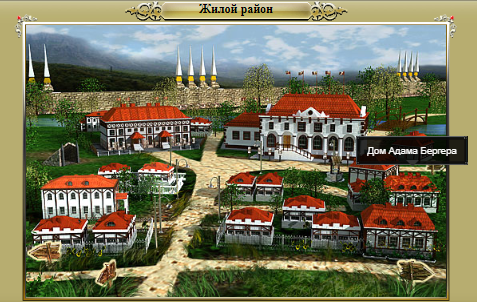
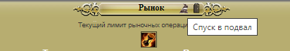
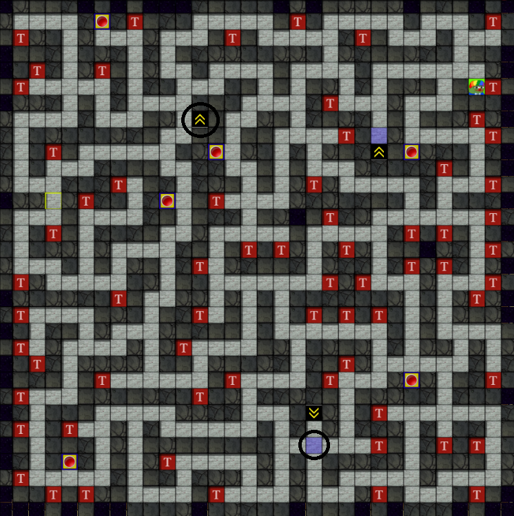
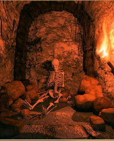
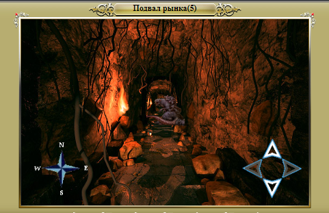
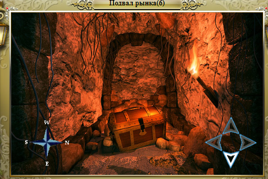

Прохождение квеста “Крысы в стенах”
Описание квеста
В августе 2022 года Закрытый мир встретил новый квест в Больших комарах с особенной наградой за выполнение и достаточно сложной загадкой в процессе прохождения. Квест рассчитан на игроков старше 70 уровня, способных противостоять отравлениям магии чумы и рутине исследования подземелий.
- Квест рассчитан на соло прохождение.
- Взять квест можно у Адама Бергера в жилом районе Больших комаров (0, 0)
- Основная награда за прохождение квеста:
- Навсегда +1000 ежедневный лимит рынка
- 280 000 опыта
- Амулет поветрия, который можно обменять в гильдиях на один из бонусов:
- Охотников: новый прием для луков и арбалетов – Стрела поветрия.
- Воинов: +3% сопротивление временным эффектам.
- Магов: +20 осквернителя
- Награда за полное прохождение квеста:
- 5000 серебра
- Амулет поветрия
- 2 случайные древние вещи
- 2 случайные руны
- Эликсиры из волшебного магазинчика
- Кислотные/Арканитовые/Ферритовые зелья
- Награда за неполное прохождение квеста (фактически квест будет сдан):
- 5000 – 25 000 серебра
- Возможность купить Амулет поветрия за 90 000 серебра
- Кристаллы спасения не работают в локациях квеста
- Квест можно пройти двумя способами
- Все карты квестового подземелья можно найти здесь.
- Всего 5 основных и 1 дополнительный уровень Подвала рынка.
Амулет поветрия
Одна из основных наград за выполнение квеста. Амулет можно обменять в одной из гильдий на вечные бонусы (изменить выбор впоследствии нельзя):
- Охотников: новый прием для луков и арбалетов – Стрела поветрия.
- Достаточно мощный прием (описание которого доступно в Гильдии охотников) – пробивает броню, поглощение урона.
- Воинов: +3% сопротивление временным эффектам.
- Полезно для аватаров с высоким значением сопротивления временным эффектам – например, если у игрока 67% поглощения временного урона, то +3% снизят урон от временных эффектов почти на 10%.
- Магов: +20 осквернителя
Начало квеста.
Квест берётся в жилом районе, в доме Адама Бергера.

Бергер рассказывает о крысах, которые поселились на нижних этажах подвала рынка и просить разобраться с причиной их появления. После диалога открывается возможность попасть в подвал рынка – для этого идем на Рынок в жилом районе и жмем кнопку “Спуск в подвал”.

Подвал рынка
- Представляет из себя подземелье с 6 этажами, из которого возможно выйти только при полном прохождении или проигранного боя.
- Для полного прохождения необходимо найти 28 скелетов с подсказками и победить босса.
- На 6 этаже есть 12 сундуков с наградой и не нападают монстры.
- В случае проигрыша, оказываетесь на Центральной площади.
- Заходить в подземелье возможно раз в час.
- С каждым переходом на этаж ниже уровень монстров растет.
- По пути нападают:
- Крысы (51-55 уровни),
- Проклятье (108-115 уровни),
- Подземные трупоеды (98-117 уровни),
- Скелеты-лучники (190-193 уровни).
В данном подземелье и пройдет основная часть квеста с загадками. Разберем вначале быстрое прохождение.
Быстрое прохождение квеста
Для быстрого прохождения квеста, игроку необходимой дойти до 5 этажа подземелья, найти и убить Крысиного короля и выйти наружу в Жилой район через дверь на 5м этаже (или выйти из подземелья любым другим способом – например, проиграв в бою).
Затем можно будет сдать квест квестодателю, получить в награду дополнительный лимит рынка, немного серебра и возможность купить Амулет поветрия (через месяц у квестодателя) за 90 000 серебра.
При таком прохождении квест будет успешно завершен, но загадка подземелья и квеста не будет разгадана и игрок не получит дополнительную награду.
Местоположение Крысиного короля и выхода из подземелья на 5м этаже. Для быстрого прохождения.

Полное прохождение квеста.
Далее будут спойлеры по прохождению и истории, поэтому желающим самостоятельно разгадать загадку лучше не читать.
Прохождение заключается в разгадке тайны появления крыс на нижних этажах подвала. Для этого необходимо найти 28 скелетов с подсказками, которые находятся в случайных тупиках (для каждого персонажа свои). По этой причине придётся обойти практически все тупики каждого этажа. При этом для всех аватаров количество скелетов на каждом этаже остаётся одинаковым.
- На 1 этаже – 5 скелетов;
- На 2 этаже – 5 скелетов;
- На 3 этаже – 6 скелетов;
- На 4 этаже – 6 скелетов;
- На 5 этаже – 6 скелетов и 6 кнопок с буквами для открытия решетки на 6 этаж.

Чтобы попасть на 6 этаж необходимо в правильной последовательности активировать кнопки на 5 этаже. На перекрестке перед спуском на 6 этаж всегда стоит Крысиный король (отмечен на карте выше, там же, на 2 клетки выше – проход на 6 этаж), которого необходимо одолеть.

Что бы попасть на 6 этаж необходимо собрать шифр (подсказки с 28 скелетов) на всех 5 этажах и в правильной последовательности активировать буквы. Для каждого персонажа свой шифр. Точки после буквы и цифры означают последовательность нажатия кнопок с буквами.
Пример шифра:
Подвал рынка(1): (3)CFF
Система >> ИГРОК : На стене нацарапана буква С.
Система >> ИГРОК : Труп обглодан до костей, кроме которых тут собственно ничего и не осталось.
Система >> ИГРОК : На стене нацарапана буква F..
Система >> ИГРОК : На стене нацарапана цифра 3.
Система >> ИГРОК : На стене нацарапана буква F…
Подвал рынка(2): (2)ACA
Система >> ИГРОК : На стене нацарапана буква A…
Система >> ИГРОК : На стене нацарапана буква A.
Система >> ИГРОК : На стене нацарапана цифра 2.
Система >> ИГРОК : Не смотря на то, что от человека остались одни кости, погиб он, судя по следам и отсутствию пыли не так давно. И ничего кроме пары погрызенных тряпок – ни доспехов, ни оружия.
Система >> ИГРОК : На стене нацарапана буква C..
Подвал рынка(3): (5)EEC
Система >> ИГРОК : На стене нацарапана буква E.
Система >> ИГРОК : На стене нацарапана буква C…
Система >> ИГРОК : На стене нацарапана буква E..
Система >> ИГРОК : На стене нацарапана цифра 5.
Система >> ИГРОК : На костях следы зубов. Но кроме истлевших тряпок не видно больше никаких следов доспехов или оружия. Вряд ли этот бедолага смог бы забраться так далеко без оружия, ведь подземелье кишит крысами. Определенно кто-то побывал здесь и забрал все его вещи.
Система >> ИГРОК : Кость одной из ног сломана. Такое ощущение, что он угодил в заранее подстроенную ловушку.
Подвал рынка(4): (1)EDD
Система >> ИГРОК : На стене нацарапана буква D…
Система >> ИГРОК : На стене нацарапана буква D..
Система >> ИГРОК : В нижнем углу вы обнаруживаете выцарапанные на стене слова “В свете факела я видел силуэт человека и крысы не нападали на него”.
Система >> ИГРОК : На стене нацарапана буква E.
Система >> ИГРОК : Здесь в ход пошла боевая магия, на стенах копоть, некоторые камни даже оплавлены.
Система >> ИГРОК : На стене нацарапана цифра 1.
Подвал рынка(5): (4)BFF
Система >> ИГРОК : На стене нацарапана цифра 4.
Система >> ИГРОК : Тщательно осматривая место вы обнаруживаете прикрытую камнями надпись на стене “Кто-то стоит за всем этим – командует крысами и устраиваешь ловушки, остановите его.”
Система >> ИГРОК : На стене нацарапана буква B.
Система >> ИГРОК : Вы нашли Сумка наемника(1).
Система >> ИГРОК : В малоприметной, заваленной камнями нише, вы находите походную сумку в которой обнаруживаете договор на оказание услуг наемника по очистке подвала городского рынка от крыс в котором на месте нанимающей стороны значится подпись Адама Бемберга. Также в сумке находится небольшой дневник, последняя страница которого исписана дрожащим почерком, автор утверждает что все это задание изначально было ловушкой, подстроенной нанимателем и что он видел его в окружении крыс на нижних этажах подземелья.
Система >> ИГРОК : На стене нацарапана буква F…
Система >> ИГРОК : На стене нацарапана буква F..
Исходя из этого мы получаем правильную последовательность нажатия кнопок – (1) EDD, (2) ACA, (3) CFF, (4) BFF, (5) EEC.
В местах где сдвоенные буквы необходимо нажать на кнопку 2 раза. После каждого правильного нажатия кнопки будет выходить сообщение в общий чат: – «Система >> ИГРОК : Какие-то механизмы пришли в движение, затем кнопка вернулась в исходное положение.»
После нажатия всех кнопок с буквами идем на 6 этаж.
На 6 этаже нас ждёт диалог с Адамом Бергером (после которого вы выбираете разойтись с миром или убить его) и сундуки с наградой. Для полного прохождения квеста необходимо отыскать все 28 скелетов и быть неподкупным при общении со злодеем. Вступаем в бой с Адамом и побеждаем его.
Далее исследуем тупики (12 тупиков) 6 этажа и забираем награду. В сундуках выпадает 2 случайные древние вещи, 2 случайные руны, несколько эликсиров из волшебного магазинчика, несколько ферритовых и арканитовых зелий.

Советы по прохождению
- Не обязательно обходить все тупики, достаточно найти нужно количество скелетов для конкретного этажа.
- Для главного боя требуется запастись большим количеством зелий и эликсиров, в том числе перед боем выпить зелья на сопротивления временному урону и броню, использовать волшебный кристалл на +50 к характеристикам, скушать волшебную сосульку на +200% к ХП и МП, по возможности в самом бою выпить кислотное/арканитовое зелье.
- Сам бой лучше проводить на скорости х0.5 и убивать Адама Бергера с крысиным королём как можно быстрее, пока они не успели отравить вас магией чумы. Зелья забытого времени лучше не жалеть.
Заключение
Немного нудный, но необычный квест с небольшим ветвлением сюжета и вариантов прохождения. Награда за прохождение квеста действительно уникальна, так как в той или иной мере навсегда усиливает персонажа и увеличивает скудные лимита рынка, что очень полезно для алхимиков и тех, кто занимается продажей больших пачек ресурсов.
Очень важно не торопиться и постараться пройти квест на “правильную” концовку, чтобы не упустить 12 сундуков с наградой в конце квеста и не тратить 90 000 серебра на покупку Амулета поветрия.
Автор прохождения: Eradicator